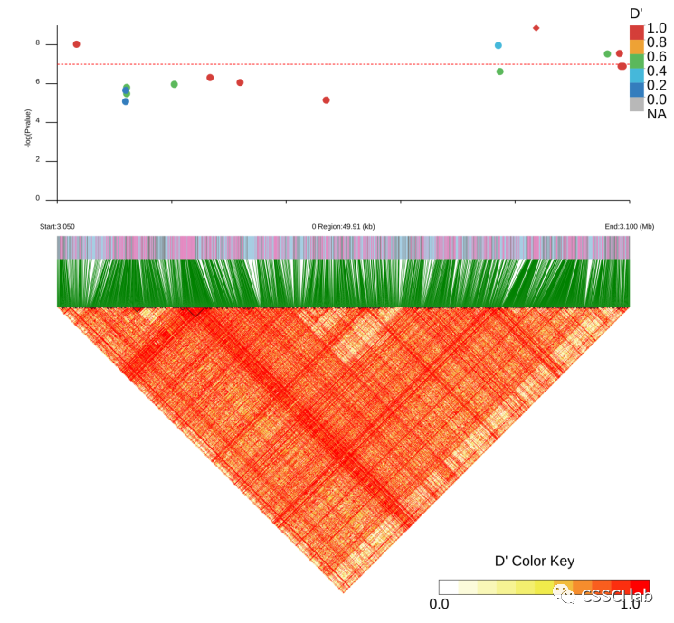
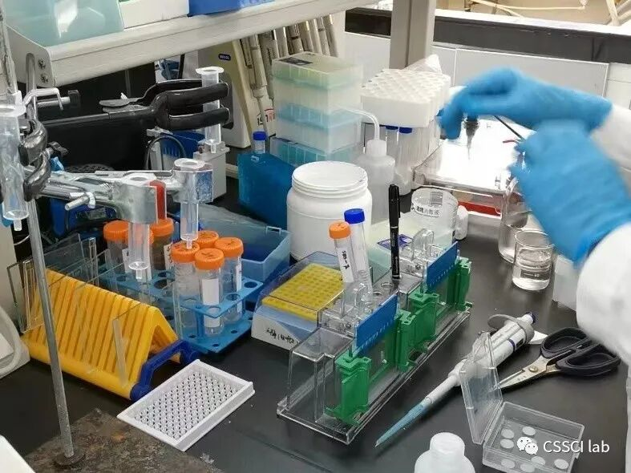
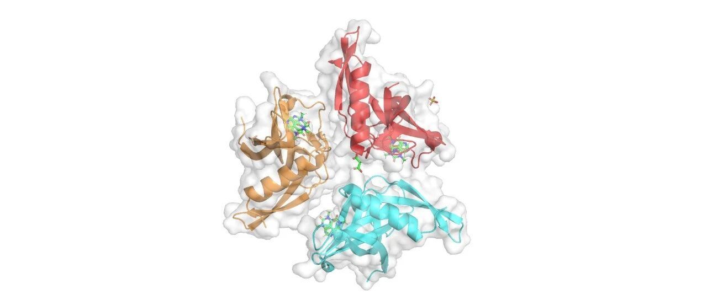
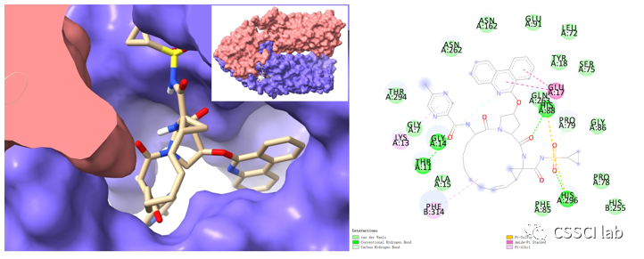
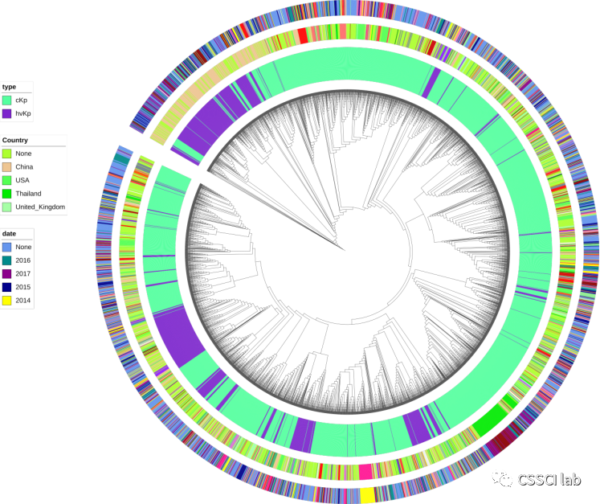

RESEARCH / THREE DIRECTIONS
跨越尺度
建立证据
实验观察、分子行为与基因组数据，是同一个科研问题相互连接的三个观察窗口。

GENE → PHENOTYPE
实验研究
构建、表达、纯化、观察。
微生物学与分子生物学实验通过基因敲除与回补、菌株构建、诱导表达、蛋白纯化、候选物验证和表型测试，回答基因、蛋白与化合物究竟发挥什么作用。
基因克隆基因敲除菌株构建蛋白纯化表型验证

STRUCTURE → MECHANISM
分子模拟
用结构、运动与相互作用解释分子机制。
分子动力学用于研究构象变化、突变效应和自由能景观；分子对接与虚拟筛选则在同一结构框架下寻找抗感染候选物，并检验其结合模式。
体系构建动力学模拟分子对接虚拟筛选自由能


GENOME → INFORMATION
生物信息
从海量而嘈杂的序列数据中寻找生物学信号。
通过序列组装、基因识别、系统发育、耐药与毒力基因筛查、移动遗传元件和数据可视化，重建微生物基因组的进化与传播。
序列组装系统发育耐药基因SNP + LD移动元件

ONE LOOP / THREE DIRECTIONS